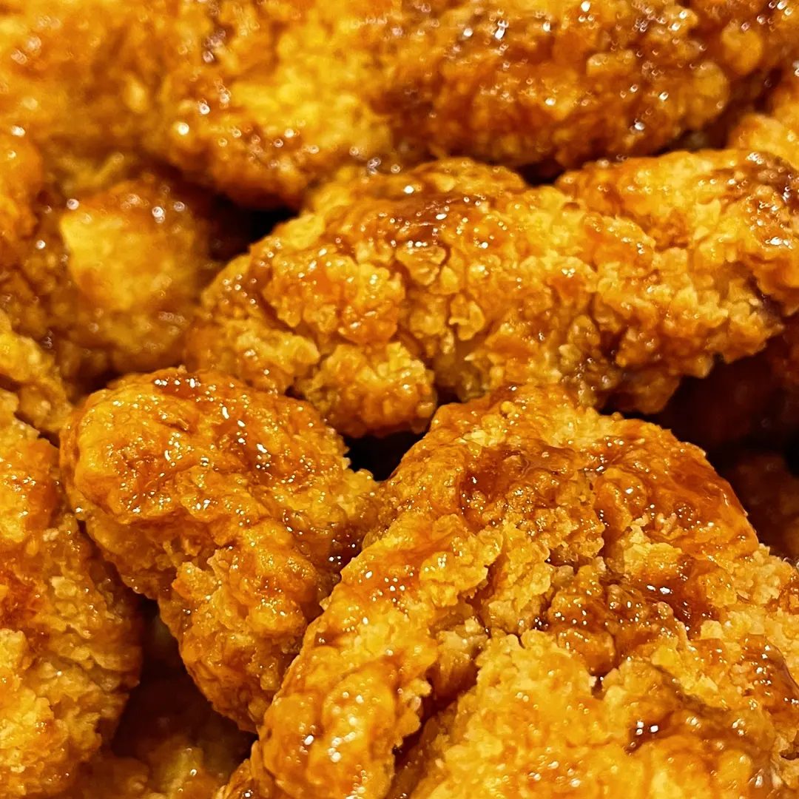

Dit is een verzameling van grappige anekdotes, verbazingwekkende ontdekkingen en enkele minder rooskleurige momenten die ik heb beleefd tijdens mijn internationalisering in Zuid-Korea.
De Chaos voor de "Health Insurance"
Het begon met de bureaucratische doolhof van de Koreaanse gezondheidsverzekering. Mijn internationale vrienden en ik begaven ons naar het gemeentehuis om de nationale verzekering te annuleren, maar de internationale dienst sprak geen Engels en mijn Koreaans was beperkt. Na een hilarische situatie ontdekten we dat Franse staatsburgers automatisch de nationale verzekering kunnen annuleren.
Observaties tijdens de Reis
Naast de komische ervaringen maakte ik interessante observaties, zoals het feit dat Koreanen terughoudend zijn, tenzij er alcohol in het spel is, en de complexiteit van de competitieve cultuur.

De Wandeling met Duitsers, Finnen en Denen
Een memorabele wandeling met verschillende nationaliteiten liet me de verschillen in voorbereiding tussen de Duitsers en anderen zien, wat resulteerde in een hilarische situatie aan het einde van de wandeling.